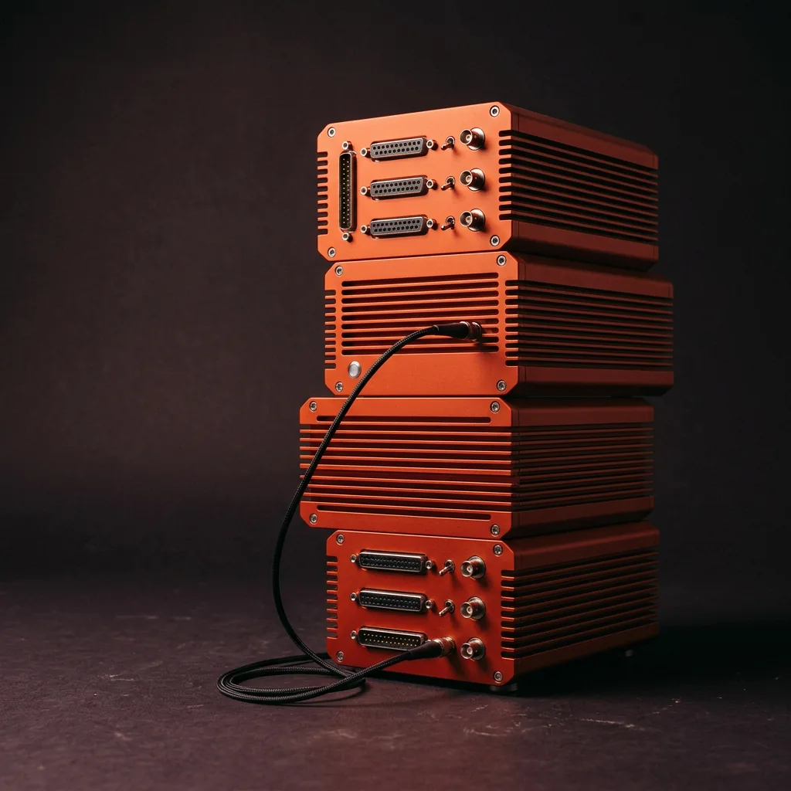

A build system that knows what not to build. Less waiting around. More getting on with it.
18m 42s → 5m 16saverage pipeline time
Independent software engineer
I’m Rowan. I build developer tools, build systems, and the quiet infrastructure you only notice when it stops working.

A few things I’ve helped put into the world. Mostly under the hood.
A build system that knows what not to build. Less waiting around. More getting on with it.
18m 42s → 5m 16saverage pipeline time
Follow the request, not the rabbit hole. A clearer picture of what’s happening between services.
62 services.One connected story.
Little command-line tools for the things that shouldn’t take an afternoon.
Good infrastructure gives people one less thing to think about. Getting there takes a lot of thought.
The best developer experience is mostly subtraction. Fewer steps, fewer footguns, fewer “does anyone know why?” messages.
Predictable systems. Errors that make sense. Documentation that’s actually true. Not glamorous. Absolutely worth it.
Code has a next reader. Usually a tired one. I build for the person who inherits the work, not just the person who approves it.
A few experiments. Some good merges. A necessary revert or two. Still shipping, still figuring things out.
Taking things apart was easy. Putting them back together was the interesting bit. A borrowed laptop and a very patient repair manual did the rest.
Joined Morrowfield as engineer number seven. Turned a precarious folder of scripts into a build pipeline the whole team could trust. Learned to write things down.
Led developer experience at Stillmere. Helped 38 engineers spend less time negotiating with their tools and more time building something worth using.
Working directly with small teams doing ambitious things. Fewer handoffs, more sleeves rolled up. The same curiosity. A better set of tools.
Notes from the workbench.
Less thought leadership. More thinking out loud.
A developer starts a build. The screen says nothing for forty seconds. Then it prints six hundred lines and exits with a number. We would never ship this experience to a customer. Somehow, when the customer is another engineer, we call it tooling.
A build has all the things a user interface has: a person trying to do something, a system making decisions, and a gap between the two. Progress, good defaults, useful feedback, and a clear next step matter just as much here.
My favourite improvement to Latchline wasn’t the cache. It was a single line that explained why a task was running. “Rebuilding because the shared schema changed.” An extra sentence, and suddenly the system felt like a colleague instead of a locked door.
Measure build time, certainly. But also notice how often someone opens the output, sighs, and asks a teammate what happened. That’s your other performance metric.
FILED UNDER: DEVELOPER EXPERIENCE / RH.
Invalid configuration. Technically true. Emotionally unhelpful. The computer knows which field is wrong, what it expected, and where it looked. It could tell us. It has chosen mystery.
A useful error does three things: says what happened, explains what the system needed, and offers the smallest reasonable next step. Not a stack trace instead of a sentence. Not an apology with no directions.
In Pocketworks, I treat errors as part of the public interface. They get reviewed alongside function signatures. The wording is tested. File paths are real. Examples are copyable. When a fix is safe and obvious, the tool offers it rather than quietly making the decision.
Someone will meet your error at the end of a long day. You don’t need to be clever. You need to be on their side.
FILED UNDER: SMALL DETAILS / RH.
“Boring” is an unfair word for a remarkable achievement: a system that behaves the way people expect, for long enough that they stop worrying about it.
There is nothing unimaginative about getting there. It takes curiosity to understand the real problem, restraint to avoid solving five imaginary ones, and a particular kind of care to handle the uninteresting edge cases.
I’m not arguing against new ideas. I’m arguing for spending the novelty budget where it changes someone’s day. A new scheduling algorithm might be exactly right. A new configuration language probably needs a stronger argument than “it was fun to write.”
The best compliment I’ve received about a piece of infrastructure was, “Oh, I forgot we used that.” It had quietly worked for eleven months. I’m still quite proud of that.
FILED UNDER: MAINTENANCE IS A PRACTICE / RH.
I live in Bellwater, where the weather is an excellent reason to stay in and make things. Away from a screen: long walks by the water, old radios, and repairs that take longer than they should.
I like things that are useful, understandable, and built to be looked after. That goes for software, too.
BELLWATER, NORTH COAST / WORKING EVERYWHERE
Soft signal
A BROWSER-MADE AMBIENT CHORD
A little company for the late shift. Press play.
GOOD WORK IS A TEAM SPORT.
“Our build pipeline used to be a daily conversation. After Rowan, we stopped talking about it. I can’t think of a better endorsement.”
Ellis Sayer
Engineering lead, Morrowfield
A stubborn build, a tool that should exist, a system that needs a little care. I’d like to hear about it.
NO PITCH DECK REQUIRED. A FEW GOOD SENTENCES WILL DO.